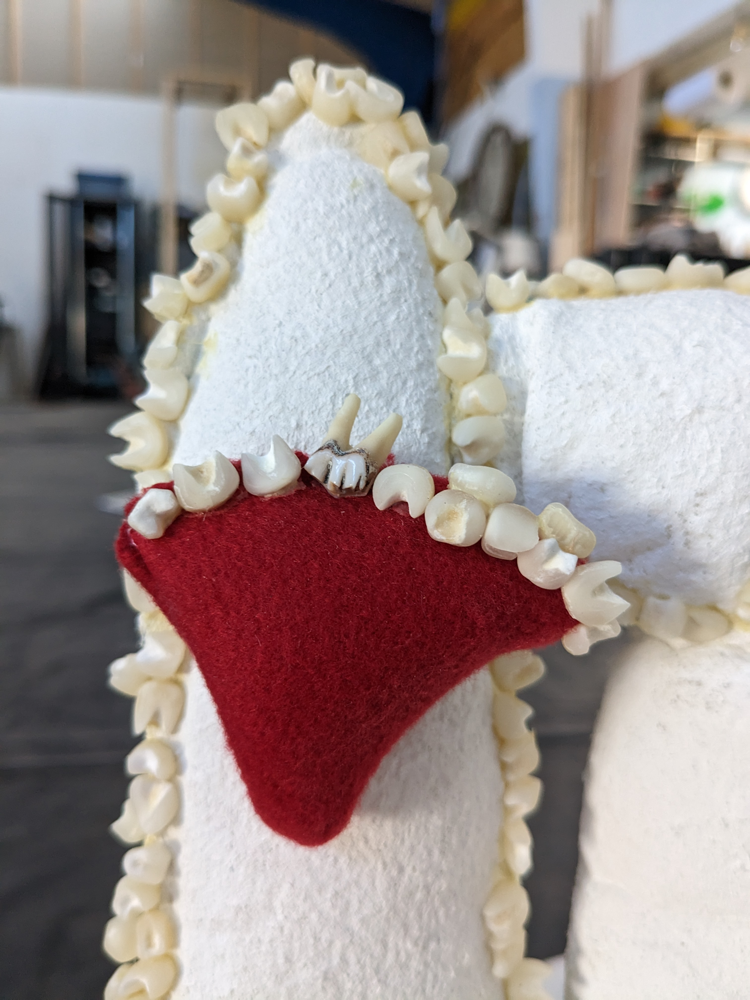
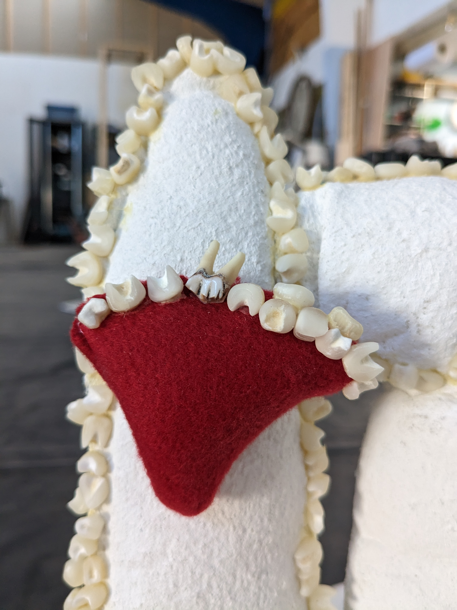
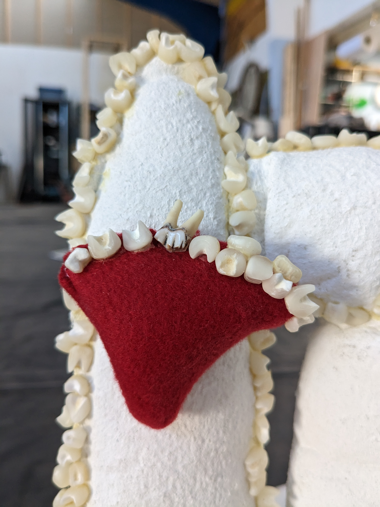
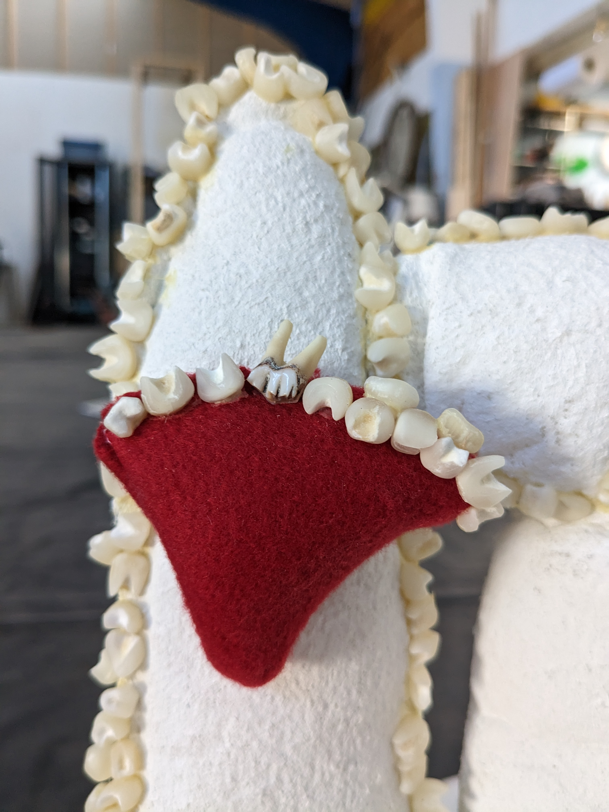

A dentist room in a bunker. The room consists of sculptures of chairs in adult and children's sizes, inspired by whipped cream and strawberries; lined with teeth. An abstracted toothbrush sculpture stands in the corner. A metal medical table with latex dental tools sits next to the biggest chair.
The installation is an ode to the tooth fairy and to the fear of the dentist. An unsettling space but with comforting, soft, dysfunctional adaptations of the elements that make up a dentist's room. As a comforting way to confront your fears.
Photos 1,2,3 by Andrea Lombardi.
Photo 4 by the artist.